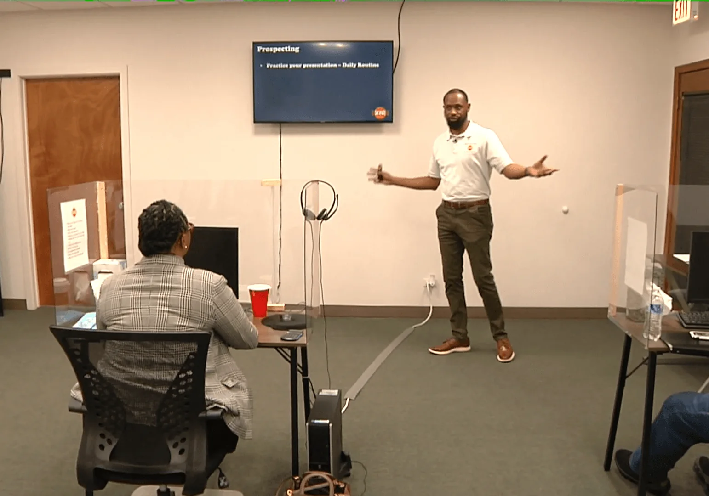

Dispatcher role
Understand what a dispatcher does, where the role begins and ends, and how it differs from freight brokering.
Understand dispatching from the carrier side: services, carrier relationships, agreements, load workflow, communication, tools, and operating boundaries.

A professional dispatcher needs more than a load board. The value comes from organization, communication, carrier understanding, documentation, and knowing the boundaries of the service being provided.
Organized around the decisions, documents, workflows, and operating knowledge you will actually use.
Understand what a dispatcher does, where the role begins and ends, and how it differs from freight brokering.
Structure services, define a carrier niche, establish operating procedures, and prepare basic agreements.
Build a process for identifying and communicating with motor carriers that may need dispatch support.
Understand service agreements, scope, pricing models, invoicing, and documentation.
Use common load-search and workflow tools to organize opportunities and carrier information.
Search, evaluate, communicate, document, and track loads within the authority and instructions of the carrier client.
Build professional communication habits with carriers, brokers, shippers, and facilities.
Recognize when activity can cross into brokering and why operating within the correct legal role matters.
Checkout remains on the current AndreErving.com store while the new website is being deployed.
Focused introduction to dispatch operations.
Dispatcher training plus one supporting course.
Broader logistics learning bundle.
Course details can change as training is updated. Confirm current access terms during checkout.
No. Dispatching and brokering are different activities. Brokering freight generally requires the appropriate broker authority and compliance framework.
People exploring dispatch work, carrier-side operations, or a dispatch service model.
Yes. Access length depends on the selected course option.
Use the course to organize what you know, see what you are missing, and move into implementation.